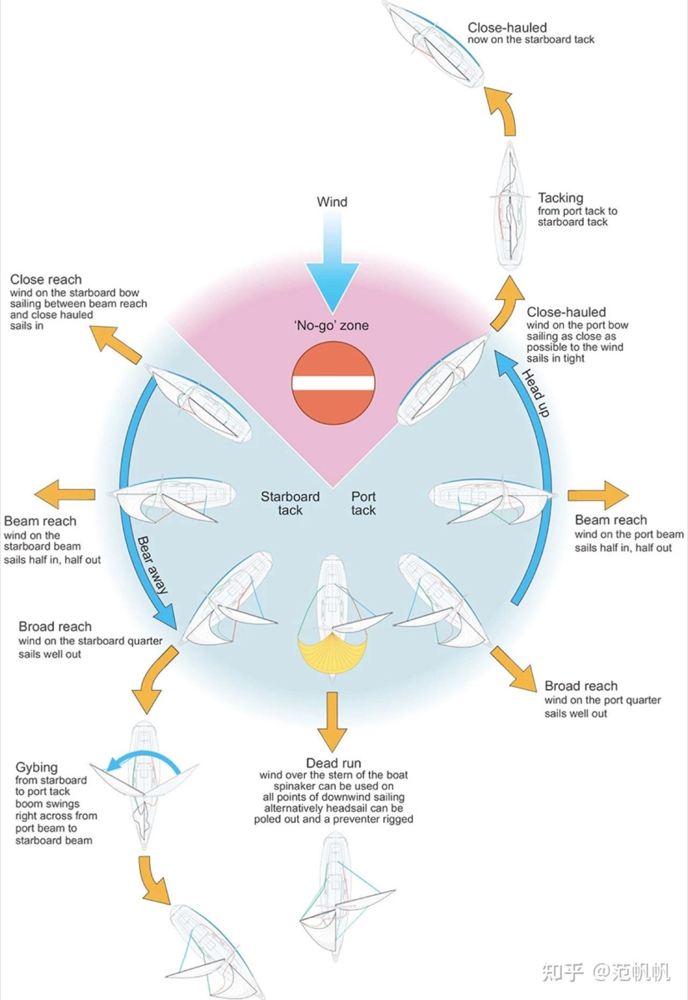

Group 1
只进入你被分配的小组白板。
Open only your assigned group board.
打开 Canva 白板 ↗Open Canva Board ↗Domain Learning Workbook
Step 1-6 · 每页一个问题 · 自动保存 · 生成 AI Agent 开发文档 Step 1-6 · One question per page · Auto-save · AI Agent brief
Session 2 · Your Project Design
选择一个你接触过或想学习的真实领域，把“新手如何逐渐看懂它”转化成玩家可以观察、判断、行动和调整的游戏系统。
Choose a real domain you have experienced or want to learn. Turn the way a beginner gradually understands it into a game system where players observe, judge, act, and adjust.
通过 Step 1–5 找到新手误解、领域判断、玩家循环、反馈和核心数据。
Use Steps 1–5 to identify novice misconceptions, domain judgment, the player loop, feedback, and core data.
网站会把回答压缩成给 AI Agent 使用的第一版网页游戏开发规格。
The site condenses your answers into a first-version web game specification for an AI Agent.
在小组Canva白板中连接数据、玩家操作、系统计算、反馈和2–3个挑战。
Use your group Canva board to connect data, player actions, calculations, feedback, and 2–3 challenges.
最终产出：一份开发摘要Markdown＋一张游戏系统与挑战空间图。AI Agent将根据它们制作一个包含游戏创意、领域知识、开发过程和可玩游戏的项目网站。
Final outputs: one development-brief Markdown file and one game-system-and-challenge-space graph. An AI Agent will use them to build a project website containing the game idea, domain knowledge, development process, and playable game.
开始前填写 Before You Start
如果不小心关闭网页，再用同一台电脑、同一个浏览器打开本页，答案会自动恢复。
If you close this page by accident, reopen it on the same computer and browser to recover your answers.
Sailing · Domain Knowledge Example
领域知识不是关于一个主题的知识点，而是在真实情境中用来观察、判断、行动和调整的实践知识。
Domain knowledge is not a collection of facts about a topic. It is practical knowledge used to observe, judge, act, and adjust in real situations.
后面每道题旁边都会显示Sailing参考答案。不要复制它；请观察它如何把真实领域中的学习转变，转化成玩家循环、数据、反馈和挑战。
Each later question includes a Sailing reference answer. Do not copy it. Notice how it translates a real learning shift into a player loop, data, feedback, and challenges.

Step 1-5 Design Summary
这里不是逐题重复你的答案，而是把它们压缩成一张可检查的设计地图。先确认这些内容是否准确，再进入 Step 6 系统图。
This page does not repeat every answer. It condenses them into a design map you can check before moving to the Step 6 system graph.
以下内容是根据你的回答形成的可编辑初稿。每行写一个数据或反馈关系，确认它们能被游戏读取、改变或计算。
This editable draft is organized from your answers. Put one item or feedback relationship on each line and check that the game can read, change, or calculate it.
Step 6 · Game System & Challenge Space Graph
这张图要让同学和 AI Agent 看懂：挑战如何设置数据，玩家如何操作，系统如何计算，以及反馈如何帮助玩家学习。
Your graph should show classmates and the AI Agent how challenges configure data, how the player acts, how the system calculates results, and how feedback supports learning.
只进入你被分配的小组白板。
Open only your assigned group board.
打开 Canva 白板 ↗Open Canva Board ↗只进入你被分配的小组白板。
Open only your assigned group board.
打开 Canva 白板 ↗Open Canva Board ↗只进入你被分配的小组白板。
Open only your assigned group board.
打开 Canva 白板 ↗Open Canva Board ↗只进入你被分配的小组白板。
Open only your assigned group board.
打开 Canva 白板 ↗Open Canva Board ↗完成标准：把系统图导出为PNG，或保留可访问的Canva链接。将它与开发摘要一起交给AI Agent，制作项目网站、可玩游戏和自动开发记录。
Completion: Export the graph as a PNG or keep an accessible Canva link. Give it to the AI Agent with the development brief to build the project website, playable game, and automatic development record.